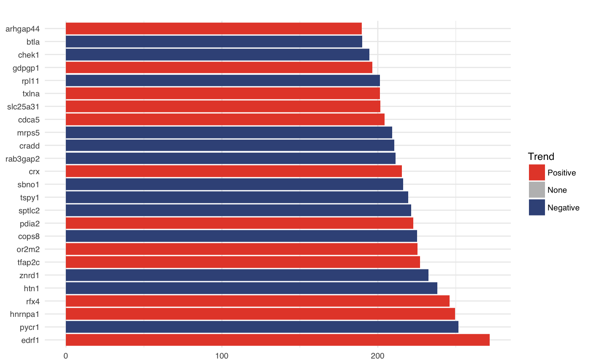

R/data.R
Example PerturbationData object of two integrated viral
RNAi screens that consists of a HCV kinome screen and a SARS kinome screen
(see references).
data(rnaiscreen)
A PerturbationData object containing a tibble with 18
columns, each describing a feature.
de Wilde, Adriaan H., et al. (2015),
A kinome-wide small interfering RNA screen identifies proviral and
antiviral host factors in severe acute respiratory syndrome coronavirus
replication, including double-stranded RNA-activated protein kinase and
early secretory pathway proteins.
Journal of virology
Reiss, Simon, et al. (2011),
Recruitment and activation of a lipid kinase by hepatitis C virus NS5A is
essential for integrity of the membranous replication compartment.
Cell Host & Microbe
Friedman J., Hastie T., Hoefling H. and Tibshirani R. (2007),
Pathwise coordinate optimization.
The Annals of Applied Statistics
Condition character names of the viruses
Replicate integer replicate numer
Plate integer plate index
RowIdx integer row index of the well on the plate
ColIdx integer column index of the well on the plate
GeneSymbol character HugoSymbol of a gene
Entrez integer entrez ID
ReadoutType character readout type,
such as `GFP` or `Luciferase`
Control integer coding of controls.
`-1` for negative control, `1` for positive control, `0` for regular
sample
Library character library type, such as `Ambion`
Perturbation character sirna identifier
Screen character identifier,
for example `Kinome` or `Genome`
Cell character cell type, such as `Huh7.5`
ScreenType character screen type, such as `E/R` for
entry/replication
Design character design of the library, e.g. `pooled`
Readout numeric readout value, e.g. GFP measurement or read
count
ReadoutClass character class of the readout, such as
`Readout` or `Viability`
NumCells integer number of measured cells per well
#>pls <- plot(fit) pls[[1]]